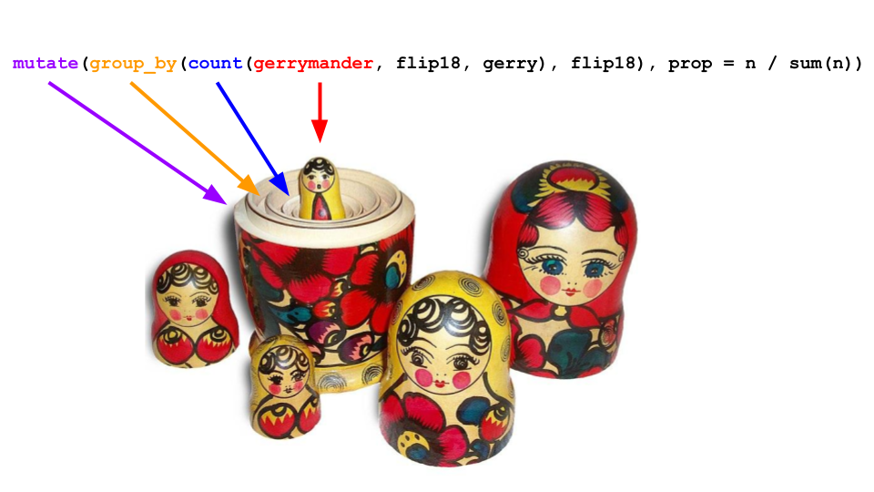
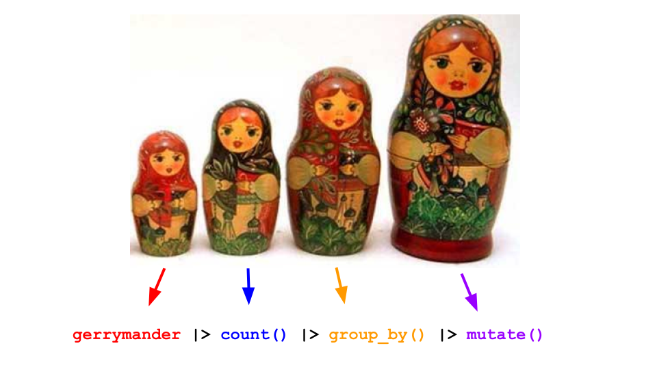

Exploring data II
Lecture 5
Warm-up
While you wait…
Prepare for today’s application exercise: ae-05-gerrymander-explore-II
Go to your
aeproject in RStudio.Make sure all of your changes up to this point are committed and pushed, i.e., there’s nothing left in your Git pane.
Click Pull to get today’s application exercise file: ae-05-gerrymander-explore-II.qmd.
Wait till the you’re prompted to work on the application exercise during class before editing the file.
Reminder: HW guidelines
Plots should include an informative title, axes and legends should have human-readable labels, and careful consideration should be given to aesthetic choices.
-
Code should follow the tidyverse style (style.tidyverse.org) Particularly,
- space before and line breaks after each
+when building aggplot - space before and line breaks after each
|>in a data transformation pipeline - code should be properly indented
- spaces around
=signs and spaces after commas
- space before and line breaks after each
Proofread your rendered PDF before submission! We cannot give you points for stuff we cannot see, so make sure your code and output is not running off the page. Use line breaks.
At least three commits with meaningful commit messages.
Code style and readability
- Whydowecareaboutthestyleandreadabilityofyourcode? \(\rightarrow\) Why do we care about the style and readability of your code?
. . .
- Je voudrais un cafe \(\rightarrow\) Je voudrais un café
Monday takeaways
What data viz should I use?
After a while this is more art than science, but you can narrow down the options based on the number and type of variables:
. . .
| Variable combo | Options |
|---|---|
| 1 numerical | histogram, density, box plot |
| 1 categorical | bar chart, |
| 2 numerical | scatterplot |
| numerical/categorical | side-by-side box or violin plots, stacked densities or histograms |
| 2 categorical | stacked bar plot (today) |
. . .
For three or more variables, the human mind is limited, and you have to start getting creative (play with color, texture, etc).
Pics are nice, but what are the numbers?
-
summarizecreates a new data frame that stores the summaries; - You can compute as many summaries as you want;
- To the left of the equal signs are your choice of column names in the new data frame you are creating. You can type whatever you want here (within reason);
- To the right of the equal signs is
Rcode that computes the summaries. You must use the correct command names (case sensitive):mean,median,quantile,sd,var, etc; - If you want to learn what these do, read the documentation (eg
?quantile).
AE 4 speed run
Packages
- For the data: usdata
gerrymander
glimpse(gerrymander)Rows: 435
Columns: 12
$ district <chr> "AK-AL", "AL-01", "AL-02", "AL-03", "AL-04", "AL-05", "AL-0…
$ last_name <chr> "Young", "Byrne", "Roby", "Rogers", "Aderholt", "Brooks", "…
$ first_name <chr> "Don", "Bradley", "Martha", "Mike D.", "Rob", "Mo", "Gary",…
$ party16 <chr> "R", "R", "R", "R", "R", "R", "R", "D", "R", "R", "R", "R",…
$ clinton16 <dbl> 37.6, 34.1, 33.0, 32.3, 17.4, 31.3, 26.1, 69.8, 30.2, 41.7,…
$ trump16 <dbl> 52.8, 63.5, 64.9, 65.3, 80.4, 64.7, 70.8, 28.6, 65.0, 52.4,…
$ dem16 <dbl> 0, 0, 0, 0, 0, 0, 0, 1, 0, 0, 0, 0, 1, 0, 1, 0, 0, 0, 1, 0,…
$ state <chr> "AK", "AL", "AL", "AL", "AL", "AL", "AL", "AL", "AR", "AR",…
$ party18 <chr> "R", "R", "R", "R", "R", "R", "R", "D", "R", "R", "R", "R",…
$ dem18 <dbl> 0, 0, 0, 0, 0, 0, 0, 1, 0, 0, 0, 0, 1, 1, 1, 0, 0, 0, 1, 0,…
$ flip18 <dbl> 0, 0, 0, 0, 0, 0, 0, 0, 0, 0, 0, 0, 0, 1, 0, 0, 0, 0, 0, 0,…
$ gerry <fct> mid, high, high, high, high, high, high, high, mid, mid, mi…Research question
Is a Congressional District more likely to have high prevalence of gerrymandering if a Democrat was able to flip the seat in the 2018 election? Support your answer with a visualization as well as summary statistics.
Step 1
ggplot(gerrymander)
Step 2

Step 3

Step 4

Step 5a

Step 5b

What’s the answer?
Is a Congressional District more likely to have high prevalence of gerrymandering if a Democrat was able to flip the seat in the 2018 election?

What are the actual numbers?
Is a Congressional District more likely to have high prevalence of gerrymandering if a Democrat was able to flip the seat in the 2018 election?
Step 1
gerrymander# A tibble: 435 × 12
district last_name first_name party16 clinton16 trump16 dem16 state party18
<chr> <chr> <chr> <chr> <dbl> <dbl> <dbl> <chr> <chr>
1 AK-AL Young Don R 37.6 52.8 0 AK R
2 AL-01 Byrne Bradley R 34.1 63.5 0 AL R
3 AL-02 Roby Martha R 33 64.9 0 AL R
4 AL-03 Rogers Mike D. R 32.3 65.3 0 AL R
5 AL-04 Aderholt Rob R 17.4 80.4 0 AL R
6 AL-05 Brooks Mo R 31.3 64.7 0 AL R
7 AL-06 Palmer Gary R 26.1 70.8 0 AL R
8 AL-07 Sewell Terri D 69.8 28.6 1 AL D
9 AR-01 Crawford Rick R 30.2 65 0 AR R
10 AR-02 Hill French R 41.7 52.4 0 AR R
# ℹ 425 more rows
# ℹ 3 more variables: dem18 <dbl>, flip18 <dbl>, gerry <fct>Step 2
gerrymander |>
count(flip18, gerry)# A tibble: 8 × 3
flip18 gerry n
<dbl> <fct> <int>
1 -1 low 2
2 -1 mid 3
3 0 low 52
4 0 mid 242
5 0 high 98
6 1 low 8
7 1 mid 25
8 1 high 5Recall
Step 3
Step 4
The Full Monty
Is a Congressional District more likely to have high prevalence of gerrymandering if a Democrat flipped the seat in the 2018 election? (flip18 = 1: Democrat flipped the seat, 0: No flip, -1: Republican flipped the seat.)

New commands
countcreates a new data frame that tallies up the number of rows that fall into each bin;group_bysilently groups the rows according to bin, and all subsequent operations are done within group;-
mutateeither adds new columns that aren’t already there, or modifies existing columns.- we used it to add a
propcolumn that wasn’t there before; - because the table of counts is grouped, the proportions were computed within each level of
flip18.
- we used it to add a
That pesky pipe
We teach you to do this
You could do this instead
Technically equivalent. Gives the same result. Super hard to read:
Without the pipe

With the pipe

In this class, you will…
Build cakes (ggplot)
Stack dolls (pipe |>)
Master these constructs, and everything will be coming up roses!
(Secrets of the temple)
For all you CS people and prospective stats majors:
- There is more to
Rthan ggplot and|>; - It’s a proper programming language like Python, C++, Java, etc;
- control flow, data structures, OOP, all that good stuff;
- In STAWANANA, we suppress that and teach you a very specific dialect of
Rcalled thetidyverse; - Keep studying stats, and we show you how to use the whole language to do statistical computing, not just data science.
Drilling down:
group_by(),
summarize(),
count()
What does group_by() do?
What does group_by() do in the following pipeline?
What does group_by() do?
What does group_by() do in the following pipeline?
Let’s simplify!
What does group_by() do in the following pipeline?
Let’s simplify!
What does group_by() do in the following pipeline?
group_by()
it converts a data frame to a grouped data frame, where subsequent operations are performed once per group
ungroup()removes grouping
gerrymander |>
group_by(state)# A tibble: 435 × 12
# Groups: state [50]
district last_name first_name party16 clinton16 trump16 dem16 state party18
<chr> <chr> <chr> <chr> <dbl> <dbl> <dbl> <chr> <chr>
1 AK-AL Young Don R 37.6 52.8 0 AK R
2 AL-01 Byrne Bradley R 34.1 63.5 0 AL R
3 AL-02 Roby Martha R 33 64.9 0 AL R
4 AL-03 Rogers Mike D. R 32.3 65.3 0 AL R
5 AL-04 Aderholt Rob R 17.4 80.4 0 AL R
6 AL-05 Brooks Mo R 31.3 64.7 0 AL R
7 AL-06 Palmer Gary R 26.1 70.8 0 AL R
8 AL-07 Sewell Terri D 69.8 28.6 1 AL D
9 AR-01 Crawford Rick R 30.2 65 0 AR R
10 AR-02 Hill French R 41.7 52.4 0 AR R
# ℹ 425 more rows
# ℹ 3 more variables: dem18 <dbl>, flip18 <dbl>, gerry <fct>group_by()
it converts a data frame to a grouped data frame, where subsequent operations are performed once per group
ungroup()removes grouping
# A tibble: 435 × 12
district last_name first_name party16 clinton16 trump16 dem16 state party18
<chr> <chr> <chr> <chr> <dbl> <dbl> <dbl> <chr> <chr>
1 AK-AL Young Don R 37.6 52.8 0 AK R
2 AL-01 Byrne Bradley R 34.1 63.5 0 AL R
3 AL-02 Roby Martha R 33 64.9 0 AL R
4 AL-03 Rogers Mike D. R 32.3 65.3 0 AL R
5 AL-04 Aderholt Rob R 17.4 80.4 0 AL R
6 AL-05 Brooks Mo R 31.3 64.7 0 AL R
7 AL-06 Palmer Gary R 26.1 70.8 0 AL R
8 AL-07 Sewell Terri D 69.8 28.6 1 AL D
9 AR-01 Crawford Rick R 30.2 65 0 AR R
10 AR-02 Hill French R 41.7 52.4 0 AR R
# ℹ 425 more rows
# ℹ 3 more variables: dem18 <dbl>, flip18 <dbl>, gerry <fct>group_by() |> summarize()
A common pipeline is group_by() and then summarize() to calculate summary statistics for each group:
gerrymander |>
group_by(state) |>
summarize(
mean_trump16 = mean(trump16),
median_trump16 = median(trump16)
)# A tibble: 50 × 3
state mean_trump16 median_trump16
<chr> <dbl> <dbl>
1 AK 52.8 52.8
2 AL 62.6 64.9
3 AR 60.9 63.0
4 AZ 46.9 47.7
5 CA 31.7 28.4
6 CO 43.6 41.3
7 CT 41.0 40.4
8 DE 41.9 41.9
9 FL 47.9 49.6
10 GA 51.3 56.6
# ℹ 40 more rowsgroup_by() |> summarize()
This pipeline can also be used to count number of observations for each group:
summarize()
... |>
summarize(
name_of_summary_statistic = summary_function(variable)
). . .
Spot the difference
What’s the difference between the following two pipelines?
gerrymander |>
count(state)# A tibble: 50 × 2
state n
<chr> <int>
1 AK 1
2 AL 7
3 AR 4
4 AZ 9
5 CA 53
6 CO 7
7 CT 5
8 DE 1
9 FL 27
10 GA 14
# ℹ 40 more rowscount()
Count the number of observations in each level of variable(s)
Place the counts in a variable called
n
count() and sort
What does the following pipeline do? Rewrite it with count() instead.
count() and sort
What does the following pipeline do? Rewrite it with count() instead.
count() and sort
What does the following pipeline do? Rewrite it with count() instead.
gerrymander |>
count(state, sort = TRUE)# A tibble: 50 × 2
state n
<chr> <int>
1 CA 53
2 TX 36
3 FL 27
4 NY 27
5 IL 18
6 PA 18
7 OH 16
8 GA 14
9 MI 14
10 NC 13
# ℹ 40 more rowsmutate()
Flip the question
Is a Congressional District more likely to have high prevalence of gerrymandering if a Democrat was able to flip the seat in the 2018 election?
vs.
Is a Congressional District more likely to be flipped to a Democratic seat if it has high prevalence of gerrymandering or low prevalence of gerrymandering?
Flipping vs. gerrymandering prevalence
The following code should produce a visualization that answers the question “Is a Congressional District more likely to be flipped to a Democratic seat if it has high prevalence of gerrymandering or low prevalence of gerrymandering?” However, it produces a warning and an unexpected plot. What’s going on?
Warning: The following aesthetics were dropped during statistical transformation: fill.
ℹ This can happen when ggplot fails to infer the correct grouping structure in
the data.
ℹ Did you forget to specify a `group` aesthetic or to convert a numerical
variable into a factor?
Another glimpse at gerrymander
glimpse(gerrymander)Rows: 435
Columns: 12
$ district <chr> "AK-AL", "AL-01", "AL-02", "AL-03", "AL-04", "AL-05", "AL-0…
$ last_name <chr> "Young", "Byrne", "Roby", "Rogers", "Aderholt", "Brooks", "…
$ first_name <chr> "Don", "Bradley", "Martha", "Mike D.", "Rob", "Mo", "Gary",…
$ party16 <chr> "R", "R", "R", "R", "R", "R", "R", "D", "R", "R", "R", "R",…
$ clinton16 <dbl> 37.6, 34.1, 33.0, 32.3, 17.4, 31.3, 26.1, 69.8, 30.2, 41.7,…
$ trump16 <dbl> 52.8, 63.5, 64.9, 65.3, 80.4, 64.7, 70.8, 28.6, 65.0, 52.4,…
$ dem16 <dbl> 0, 0, 0, 0, 0, 0, 0, 1, 0, 0, 0, 0, 1, 0, 1, 0, 0, 0, 1, 0,…
$ state <chr> "AK", "AL", "AL", "AL", "AL", "AL", "AL", "AL", "AR", "AR",…
$ party18 <chr> "R", "R", "R", "R", "R", "R", "R", "D", "R", "R", "R", "R",…
$ dem18 <dbl> 0, 0, 0, 0, 0, 0, 0, 1, 0, 0, 0, 0, 1, 1, 1, 0, 0, 0, 1, 0,…
$ flip18 <dbl> 0, 0, 0, 0, 0, 0, 0, 0, 0, 0, 0, 0, 0, 1, 0, 0, 0, 0, 0, 0,…
$ gerry <fct> mid, high, high, high, high, high, high, high, mid, mid, mi…mutate()
We want to use
flip18as a categorical variableBut it’s stored as a numeric
So we need to change its type first, before we can use it as a categorical variable
The
mutate()function transforms (mutates) a data frame by creating a new column or updating an existing one
In this case, we want to use it to update an existing column, flip18.
mutate() in action
# A tibble: 435 × 12
district last_name first_name party16 clinton16 trump16 dem16 state party18
<chr> <chr> <chr> <chr> <dbl> <dbl> <dbl> <chr> <chr>
1 AK-AL Young Don R 37.6 52.8 0 AK R
2 AL-01 Byrne Bradley R 34.1 63.5 0 AL R
3 AL-02 Roby Martha R 33 64.9 0 AL R
4 AL-03 Rogers Mike D. R 32.3 65.3 0 AL R
5 AL-04 Aderholt Rob R 17.4 80.4 0 AL R
6 AL-05 Brooks Mo R 31.3 64.7 0 AL R
7 AL-06 Palmer Gary R 26.1 70.8 0 AL R
8 AL-07 Sewell Terri D 69.8 28.6 1 AL D
9 AR-01 Crawford Rick R 30.2 65 0 AR R
10 AR-02 Hill French R 41.7 52.4 0 AR R
# ℹ 425 more rows
# ℹ 3 more variables: dem18 <dbl>, flip18 <fct>, gerry <fct>
mutate() in action
# A tibble: 435 × 12
flip18 district last_name first_name party16 clinton16 trump16 dem16 state
<fct> <chr> <chr> <chr> <chr> <dbl> <dbl> <dbl> <chr>
1 0 AK-AL Young Don R 37.6 52.8 0 AK
2 0 AL-01 Byrne Bradley R 34.1 63.5 0 AL
3 0 AL-02 Roby Martha R 33 64.9 0 AL
4 0 AL-03 Rogers Mike D. R 32.3 65.3 0 AL
5 0 AL-04 Aderholt Rob R 17.4 80.4 0 AL
6 0 AL-05 Brooks Mo R 31.3 64.7 0 AL
7 0 AL-06 Palmer Gary R 26.1 70.8 0 AL
8 0 AL-07 Sewell Terri D 69.8 28.6 1 AL
9 0 AR-01 Crawford Rick R 30.2 65 0 AR
10 0 AR-02 Hill French R 41.7 52.4 0 AR
# ℹ 425 more rows
# ℹ 3 more variables: party18 <chr>, dem18 <dbl>, gerry <fct>Revisit the plot
“Is a Congressional District more likely to be flipped to a Democratic seat if it has high prevalence of gerrymandering or low prevalence of gerrymandering?”
mutate() and overwrite
You can overwrite an existing variable with mutate():
mutate() and if_else()
Use mutate() with if_else() to recode with an either/or logic:
If
party16is “D”, recode it as “Democrat”, otherwise recode it as “Republican”.
gerrymander |>
mutate(party16_expanded = if_else(party16 == "D", "Democrat", "Republican")) |>
select(district, party16, party16_expanded)# A tibble: 435 × 3
district party16 party16_expanded
<chr> <chr> <chr>
1 AK-AL R Republican
2 AL-01 R Republican
3 AL-02 R Republican
4 AL-03 R Republican
5 AL-04 R Republican
6 AL-05 R Republican
7 AL-06 R Republican
8 AL-07 D Democrat
9 AR-01 R Republican
10 AR-02 R Republican
# ℹ 425 more rows
mutate() and case_when()
Use mutate() with case_when() to recode with a more complex logic:
If
flip18is 1, recode it as “Democrat flipped”, ifflip18is 0, recode it as “No flip”, and ifflip18is -1, recode it as “Republican flipped”.
gerrymander |>
mutate(
flip18_expanded = case_when(
flip18 == 1 ~ "Democrat flipped",
flip18 == 0 ~ "No flip",
flip18 == -1 ~ "Republican flipped"
)
) |>
select(district, flip18, flip18_expanded) |>
group_by(flip18) |> # group by flip type
slice_head(n = 1) # show top row per group# A tibble: 3 × 3
# Groups: flip18 [3]
district flip18 flip18_expanded
<chr> <dbl> <chr>
1 MN-01 -1 Republican flipped
2 AK-AL 0 No flip
3 AZ-02 1 Democrat flipped
mutate() and store
If you want to keep your changes, you need to store the data frame after mutate():
gerrymander |>
mutate(
p16 = if_else(party16 == "D", "Dem", "Rep")
) |>
select(district, p16) |>
slice_head(n = 3) # show top 3 rows# A tibble: 3 × 2
district p16
<chr> <chr>
1 AK-AL Rep
2 AL-01 Rep
3 AL-02 Rep gerrymander |>
select(district, p16)Error in `select()`:
! Can't select columns that don't exist.
✖ Column `p16` doesn't exist.gerrymander <- gerrymander |>
mutate(
p16 = if_else(party16 == "D", "Dem", "Rep")
) |>
select(district, p16)
gerrymander |>
select(district, p16) |>
slice_head(n = 3) # show top 3 rows# A tibble: 3 × 2
district p16
<chr> <chr>
1 AK-AL Rep
2 AL-01 Rep
3 AL-02 Rep Application exercise
ae-05-gerrymander-explore-II
Go to your ae project in RStudio.
If you haven’t yet done so, make sure all of your changes up to this point are committed and pushed, i.e., there’s nothing left in your Git pane.
If you haven’t yet done so, click Pull to get today’s application exercise file: ae-05-gerrymander-explore-II.qmd.
Work through the application exercise in class, and render, commit, and push your edits by the end of class.
Recap: aesthetic mappings
Local aesthetic mappings for a given
geomGlobal aesthetic mappings for all
geoms